CTF Pi
Overview
A full-stack Capture The Flag platform built to run on a Raspberry Pi. Users log in, browse challenges, and interact with the server through a custom binary protocol. The whole system runs on the Pi with physical GPIO LED indicators showing live server status — green for online, red for down, yellow for maintenance, white for active SSH sessions.
Built as a university project for Project IV — Mobile and Networked Environments, with 110 commits and a full multi-layer architecture from hardware GPIO all the way up to a React SPA.
Architecture
- C++ backend listens on port 8080 via raw TCP sockets with a custom 12-byte packet format
- Node.js middleware bridges WebSocket (port 3000) to TCP, translating JSON ↔ binary packets
- React frontend connects via WebSocket, sends commands like LOGIN, REQUEST_FLAG_IMAGE, TOGGLE_MAINTENANCE
- Nginx serves the built React SPA on port 80
- PostgreSQL stores login attempts and nginx access logs
- GPIO LEDs on the Pi provide physical server state visualization
Custom Binary Protocol
Every client-server message uses a custom packet format:
Commands: LOGIN (100), TOGGLE_MAINTENANCE (101), SET_ONLINE (102), REQUEST_FLAG_IMAGE (103), ACK (200), ERROR (400)
Server State Machine
The C++ server operates as a state machine with three states: ONLINE, MAINTENANCE, and OFFLINE. Clients can trigger state transitions by sending commands from the Challenges page. Each state change is reflected immediately via GPIO LEDs on the physical hardware.
Features
- User authentication via custom binary LOGIN command
- Challenge browsing and flag submission
- Admin maintenance mode toggle from the frontend
- Physical GPIO LEDs reflecting live server state
- Nginx access log ingestion into PostgreSQL
- Python maintenance scripts and start orchestration
- Doxygen documentation generation
- Environment-based configuration via .env
Project Structure
Server-Client-CTFpi/ ├── Backend/ # C++ TCP server ├── Frontend/CTF/ # React SPA ├── Middleware/ # Node.js WebSocket ↔ TCP bridge ├── start.py # Orchestration script ├── maintain.py # Maintenance utilities ├── nginx_to_pg.py # Log ingestion └── Doxyfile # API docs config
Photos
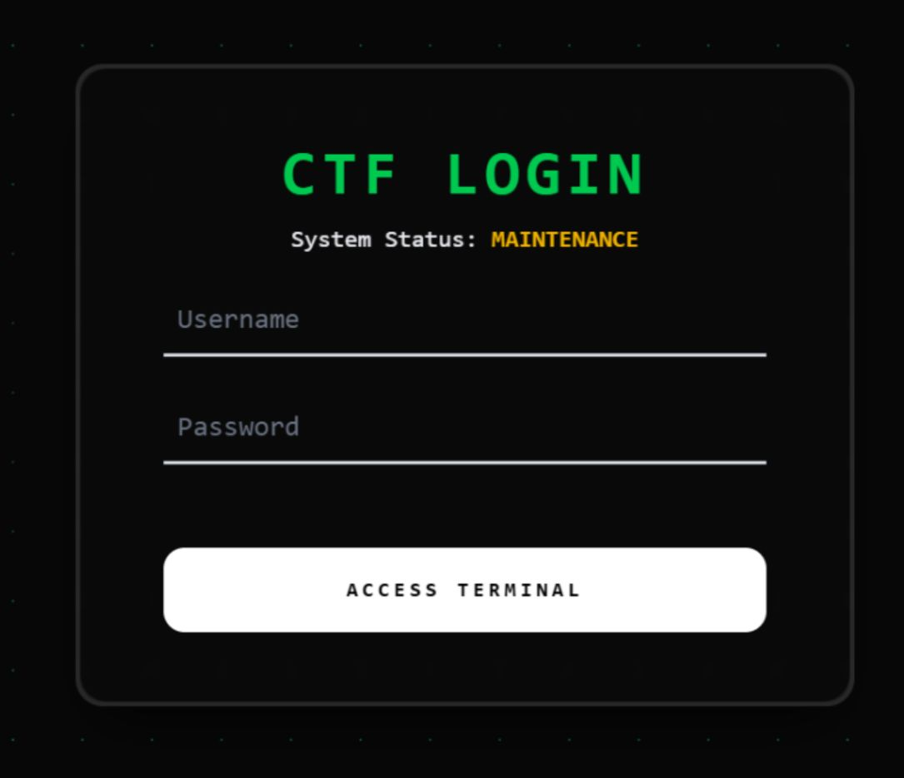
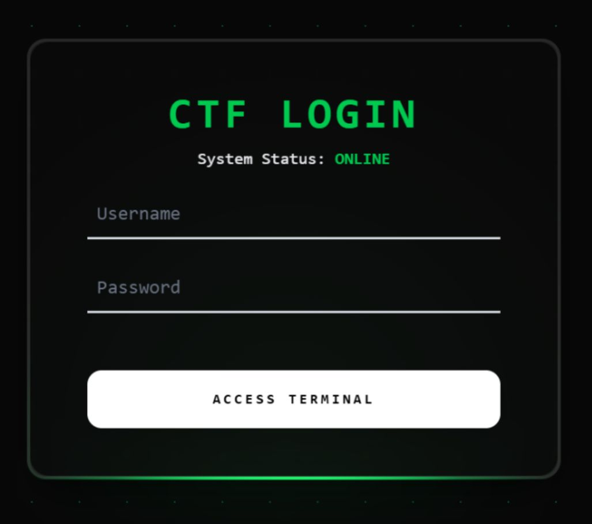
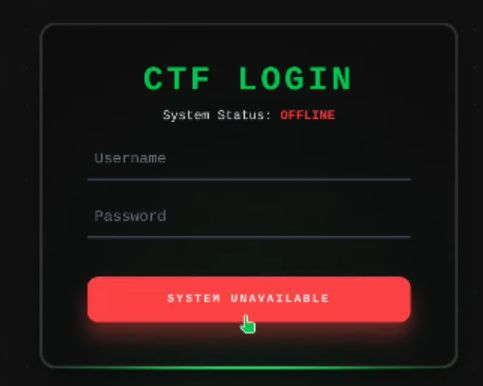
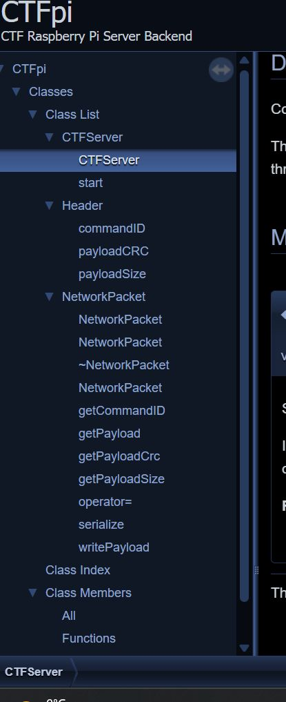
.jpeg)
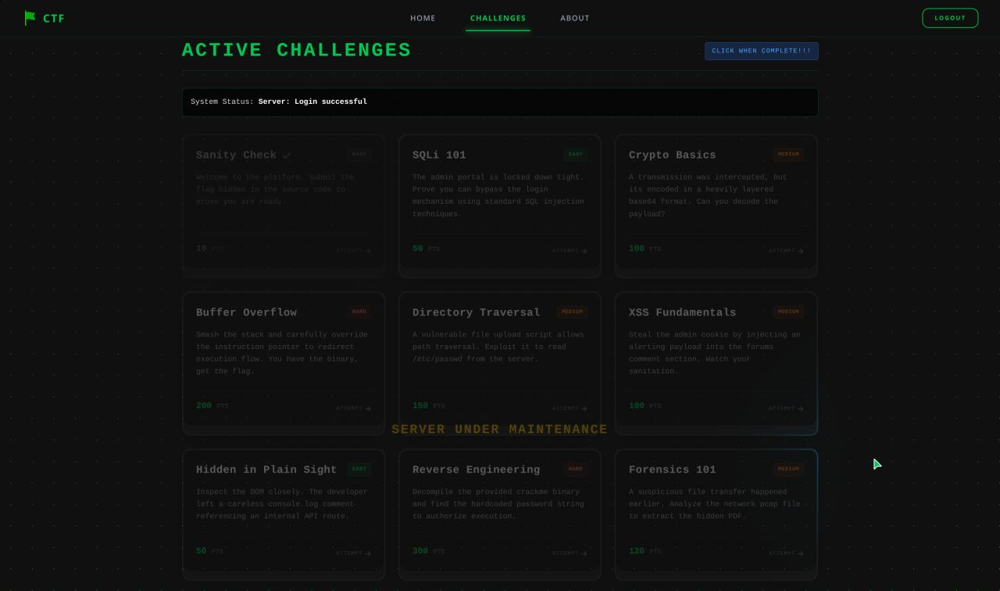
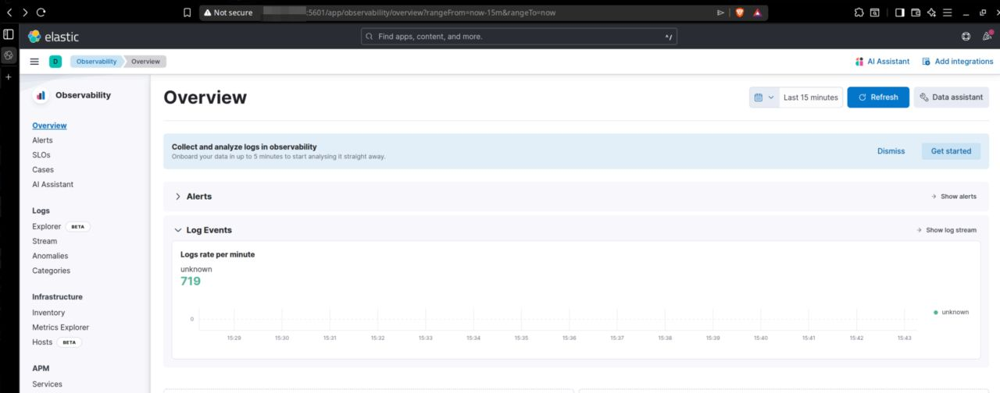
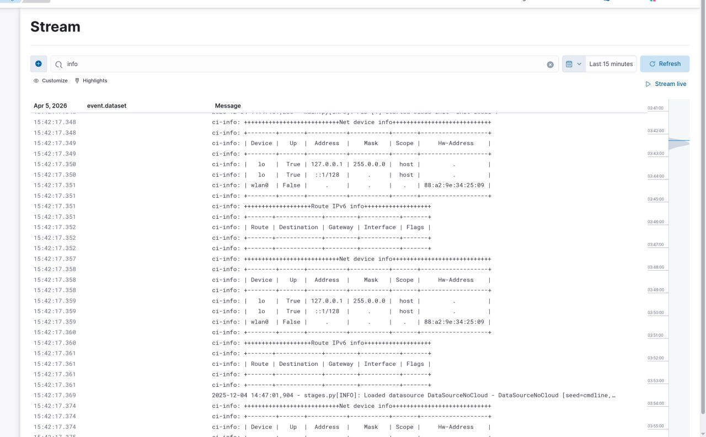
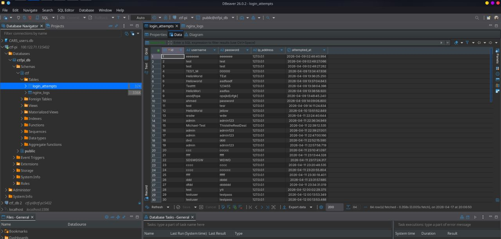
.jpeg)
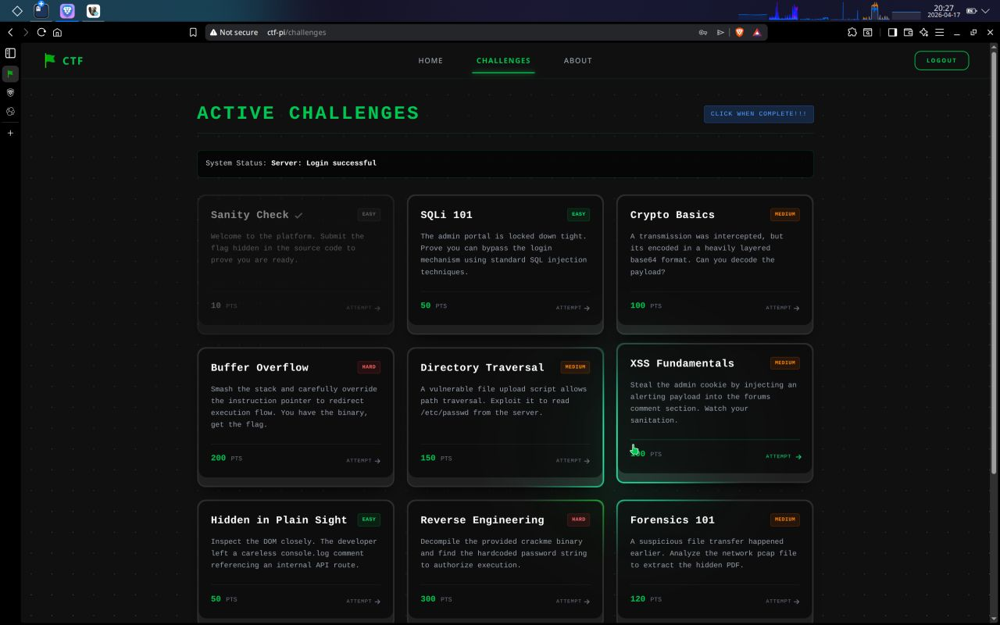
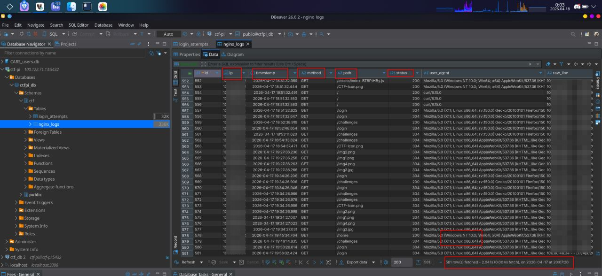
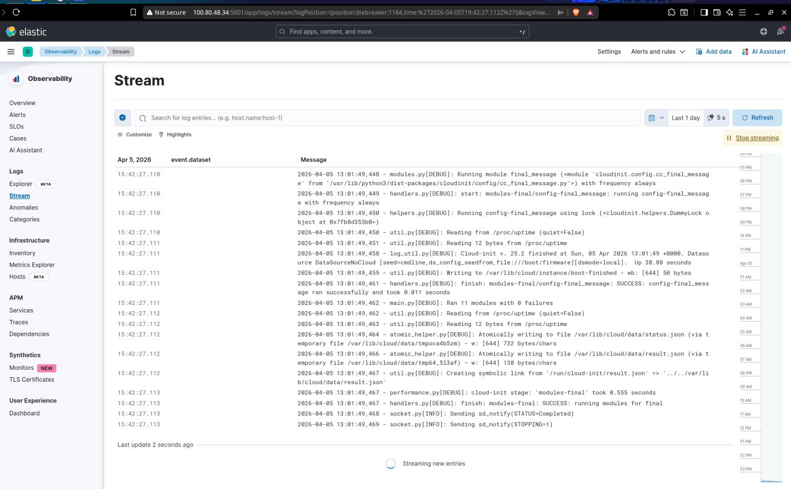
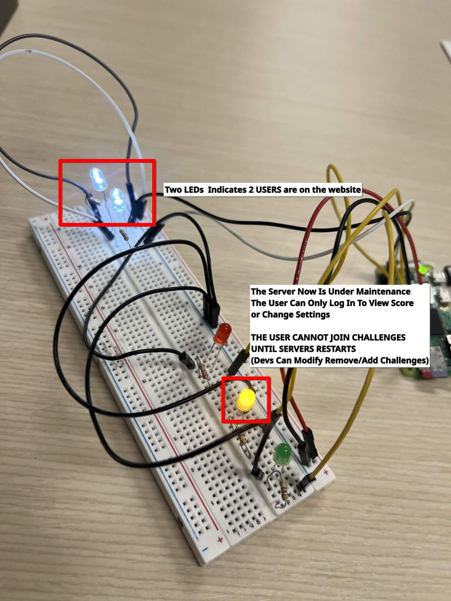
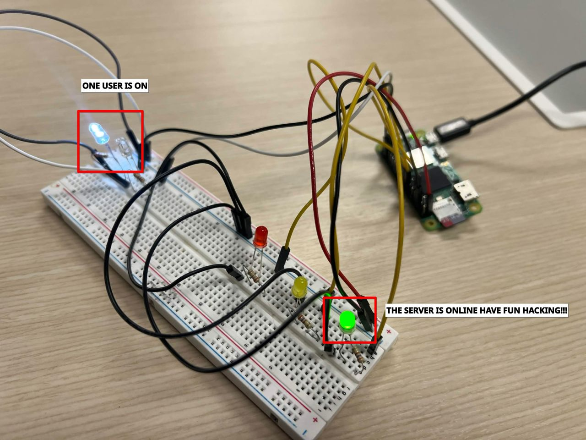
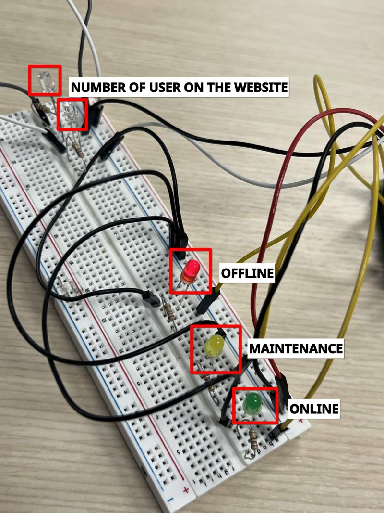